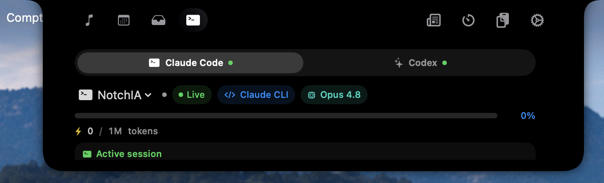
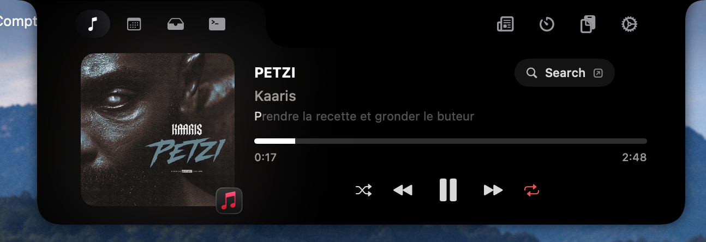
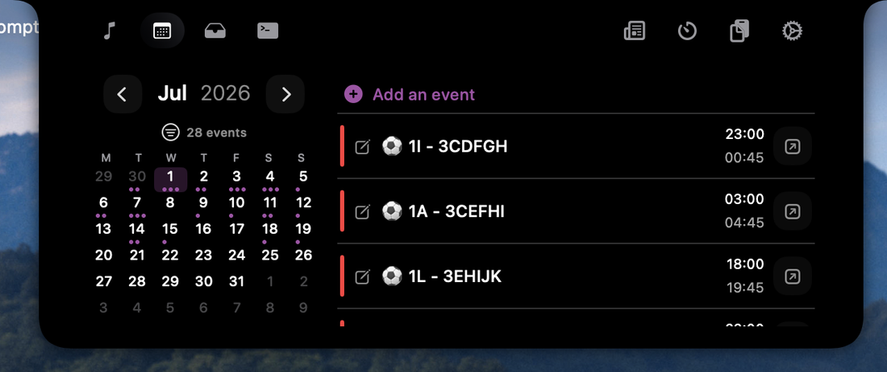
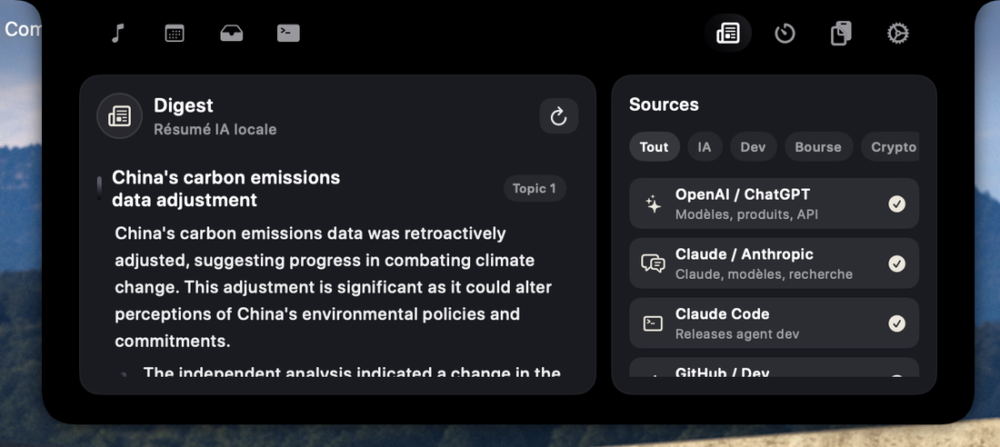
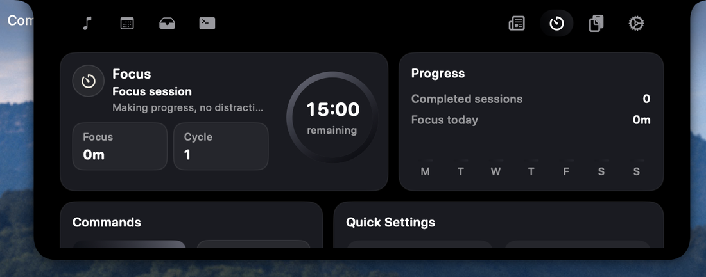
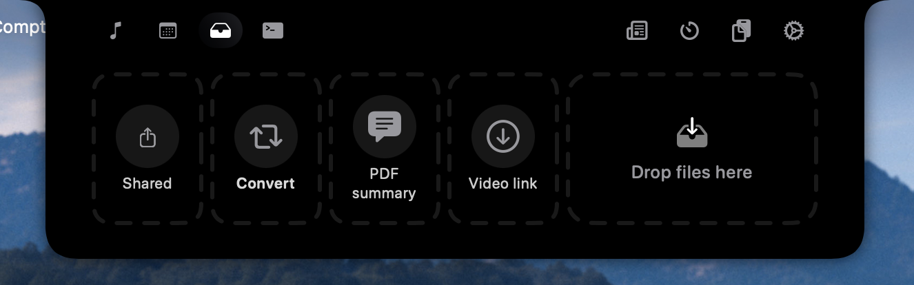

La muesca
ahora.
NotchIA convierte la zona muerta de tu MacBook en un centro de control interactivo: medios, calendario, IA en vivo, Concentration, portapapeles, HUD. Todo lo que importaba, al alcance de la vista.
~ 12 MB · macOS 15+ · o vía Homebrew
Gratis para siempre · Pro desde 2,99 €/mes o 24,99 € de por vidaVista previa de la zona de muesca. El marquee se actualiza cada segundo.
¿Qué es NotchIA?
NotchIA es una aplicación macOS independiente francesa, disponible desde abril de 2026 en su versión 2.9.20 (agosto de 2026). Transforma la muesca del MacBook, o la barra de menú en los Mac sin muesca física, en un centro de control interactivo, con 14 módulos nativos: reproductor multifuente (Apple Music, Spotify, YouTube Music), calendario, Digest IA on-device basado en Apple Intelligence (Foundation Models), Concentration con estadísticas, historial del portapapeles, integración en directo de Claude Code y ChatGPT Codex con diez estados de actividad, conversión de archivos, HUD del sistema y Sneak Peek Engine. Modelo freemium: Esencial gratis de por vida, Pro a 2,99 €/mes o 24,99 € de por vida. Funciona 100 % localmente, sin telemetría, compatible con macOS 15 Sequoia o más reciente (Apple Silicon e Intel).
A tu imagen.
Color de acento (sistema, presets, selector libre), icono de app reemplazable, forma de la muesca ajustable, altura separada para pantallas con y sin muesca.
- → Pestañas visibles configurables
- → Visualizadores personalizados importables
- → Cara animada en reposo (parpadeos)
- → Animaciones spring naturales
- → Háptica del trackpad opcional
Tres planes. A tu ritmo.
Gratis para siempre para empezar, mensual para probar la IA unos meses, o licencia de por vida para no pensar más en ello.
Esencial
gratisLa muesca útil sin IA, para empezar.
- ✓ Medios multifuente · letras · visualizador
- ✓ Calendario + Recordatorios
- ✓ HUD del sistema · volumen, brillo, teclado
- ✓ Sneak Peek Engine
- ✓ Detección · llamadas, focus, captura
- ✓ Concentration completo · estadísticas · sonidos
- ✓ Personalización visual
- · IA en directo ↗ Pro
- · Shelf, conversor, compartir ↗ Pro
- · Historial del portapapeles ↗ Pro
Pro mensual
flexibleTodas las funciones Pro. Cancela cuando quieras.
- ★ Todo lo de Esencial incluido
- ★ IA en directo · Claude Code, Codex
- ★ Estadísticas IA · tokens, caché, latencia, cuotas
- ★ Gestión de archivos · Shelf, conversor 16 formatos, Quick Share, QuickLook
- ★ Historial del portapapeles · ilimitado, fijado, búsqueda
- ★ 1 Mac · actualizaciones incluidas
pago seguro Stripe · cancela cuando quieras
Pro de por vida
mejor precioSe amortiza en menos de 9 meses frente a la suscripción.
- ★ Todo el Pro mensual, sin límite de tiempo
- ★ IA en directo · Shelf · Conversor · Quick Share · Portapapeles
- ★ 2 Mac (en vez de 1)
- ★ Todas las actualizaciones mayores futuras
- ★ Visualizadores e iconos personalizados · colores ilimitados
- ★ Soporte prioritario FR
- ★ Sin recurrencia, sin renovación
Pago único seguro Stripe · clave por email
la IA trabaja.
tú lo ves.
NotchIA detecta automáticamente tus sesiones de Claude Code y ChatGPT Codex. Actividad, tareas en curso, permisos requeridos, cuotas de 5 h y 7 d: todo se lee localmente, nada sale de tu máquina.
Un punto de color bajo la muesca cerrada por sesión activa. Al hacer clic, el IDE pasa al primer plano.

Apple Music, Spotify, YouTube.
La misma barra.
Reproductor multifuente nativo vía Now Playing macOS: la muesca cerrada muestra la portada, abierta da controles, letras sincronizadas y visualizador. Sneak peek discreto al cambiar de canción.

Tu próxima cita.
No toda la agenda.
Vista de día desplazable con marcador bajo cada fecha ocupada. Vista de mes en cuadrícula clásica. Eventos y recordatorios uno al lado del otro. Creación directa desde la muesca.
- → Marcar un recordatorio con un clic
- → Primer día de la semana a tu elección
- → Auto-scroll al próximo evento
- → Selección de calendarios a mostrar

Tu briefing de actualidad.
Resumido en tu Mac.
Pegas tus feeds RSS/Atom. Indicas lo que te interesa en lenguaje natural. Apple Intelligence filtra, resume, prioriza: sin que un solo byte salga de tu máquina.
- → Tus propios feeds RSS / Atom
- → Temas a seguir en lenguaje natural
- → Resumen Apple Intelligence on-device
- → Caché 14 días · 100% local · cero envío externo
Requiere macOS 26+ para Apple Intelligence. Sin él, degradación elegante: viewer sin resumen IA.

Una caja de herramientas.
No una ventana.
Concentration, historial del portapapeles, estantería de archivos, conversor, Quick Share, QuickLook: todos cargados bajo demanda en la muesca.

Historial completo de tu portapapeles.

macOS, reimaginado.
NotchIA reemplaza los HUD nativos, hace rotar mini-widgets en la muesca cerrada y detecta automáticamente llamadas, modo focus y grabaciones.
Volumen, brillo, teclado: bajo la muesca.
Adiós a la gran cápsula gris en el centro de la pantalla. NotchIA integra los HUD en la propia muesca.
La muesca cerrada rota.
Mini-widgets en rotación: música, Concentration, portapapeles, volumen, brillo. Solo cuando hay contenido activo.
intervalo + duración configurables
El contexto, sin esfuerzo.
NotchIA reconoce lo que pasa en tu Mac y adapta la muesca en consecuencia.
Indicador en la muesca durante FaceTime, Zoom, Teams, Meet…
Muestra el Focus Mode activo: No molestar, Trabajo, Sueño…
QuickTime, OBS, etc.: ocultación automática del notch durante la captura.
La muesca se abre como tú quieras.
Retraso de apertura configurable, cierre auto 0–2 s, zona de hover extendida.
Hacia abajo para abrir la muesca cerrada. Sensibilidad ajustable.
Todas las pantallas, pantalla preferida solamente, o cambio auto a la activa.
Recuerda la última pestaña abierta. Visible en pantalla bloqueada.
« La muesca no es un defecto que ocultar. Es la única zona de la pantalla que nunca se cierra. Mejor confiarle lo que importa. »
Antes de descargar.
¿Qué es NotchIA?
NotchIA es una aplicación macOS que convierte la muesca del MacBook (o la barra de menú en pantallas sin muesca) en un centro de control interactivo. Reúne en un solo punto de acceso: un reproductor multifuente, un calendario, un Digest IA on-device (briefing de actualidad resumido por Apple Intelligence desde tus feeds RSS), un Concentration completo, asistentes de IA en directo (Claude Code, Codex, en Pro), un historial del portapapeles, un conversor de archivos y un reemplazo estético de los HUD del sistema.
¿Cuál es la mejor app para la muesca del MacBook en 2026?
NotchIA es la mejor app para la muesca del MacBook en 2026 si buscas una herramienta completa: seguimiento de IA en directo (Claude Code, Codex), multimedia, calendario, portapapeles, archivos y HUD del sistema en una sola superficie, con un nivel Esencial gratis para siempre. Para necesidades más concretas, NotchNook (efecto Dynamic Island), MediaMate (HUD multimedia) o TopNotch (ocultar la muesca) siguen siendo pertinentes. El detalle app por app está en nuestra comparativa 2026 de apps de muesca.
¿Qué versión de macOS se requiere?
NotchIA requiere macOS 15.0 (Sequoia) o más reciente. La app funciona de forma nativa en Apple Silicon (M1, M2, M3, M4) y en Intel. Las funciones de IA on-device (Digest, resumen del Shelf) requieren macOS 26+ con Apple Intelligence; degradación elegante en caso contrario.
¿Funciona NotchIA en un Mac sin muesca física?
Sí. En Mac sin muesca física (iMac, MacBook Air antiguos, Mac mini con pantalla externa), NotchIA crea una zona de muesca virtual en la barra de menú. La altura es configurable por separado para ambos contextos.
¿Qué asistentes de IA admite NotchIA?
NotchIA detecta automáticamente las sesiones activas de dos asistentes: Claude Code (Anthropic), ChatGPT Codex (OpenAI). La app muestra 10 estados en directo (Compilación, Terminal, Búsqueda, Lectura, Modificación, Web, Escritura, Subagente, Planificación, Ejecución), las estadísticas de tokens y caché, las cuotas de 5h y 7d, y notifica cuando un asistente espera permiso.
¿Qué reproductores de música son compatibles?
NotchIA admite de forma nativa Apple Music, Spotify, YouTube Music y cualquier app que use la API Now Playing de macOS. La muesca muestra la portada con color dominante extraído, controles personalizables y letras sincronizadas en tiempo real vía lrclib (26 idiomas).
¿NotchIA recopila datos?
No. NotchIA no recopila datos de uso ni envía telemetría. Los módulos calendario, portapapeles, Concentration, asistentes IA y resumen Shelf funcionan 100% localmente. Los registros de sesión de Claude Code y Codex se leen desde el disco local: nunca se envían. El resumen de un archivo en el Shelf se genera on-device por Apple Intelligence (Foundation Models). El módulo Digest hace fetch de tus feeds RSS públicos directamente desde tu Mac, y el resumen también se genera on-device: jamás se envía a OpenAI, Anthropic ni nuestros servidores. Conexiones salientes únicas: actualización Sparkle (firma EdDSA), validación de licencia (email + clave), fetch de los feeds RSS que tú mismo configuraste.
¿Cuánto cuesta NotchIA y cuáles son los planes?
Tres planes. Esencial: gratis para siempre, con medios, calendario, HUD del sistema, Sneak Peek, detecciones, Concentration completo y personalización. Pro mensual: 2,99 €/mes, cancela cuando quieras, 1 Mac, añade los tres módulos Pro: IA en directo (Claude Code, Codex), gestión de archivos (Shelf, conversor 16 formatos, Quick Share, QuickLook) y historial del portapapeles ilimitado. Pro de por vida: 24,99 € pago único, 2 Mac, todas las actualizaciones mayores, soporte prioritario. Pagos Pro mediante Stripe seguro; Esencial sigue siendo gratis.
¿Qué es Digest y cómo funciona?
Digest es una nueva pestaña gratuita añadida en 2.8.0 (Wise Owl 🦉). Pegas tus feeds RSS/Atom preferidos, escribes en lenguaje natural lo que te interesa (ej. «IA vídeo, macOS 26, SwiftUI»), y Apple Intelligence, Foundation Models on-device, filtra, resume y prioriza. Briefing corto para escanear en 30 segundos, directamente en la muesca. Caché de 14 días para evitar regeneración en bucle. 100% local: los feeds se fetched desde tu Mac, los resúmenes se generan en tu CPU/GPU, cero llamadas a un proveedor IA tercero o a nuestros servidores. Requiere macOS 26+ para Apple Intelligence; en macOS 15, degradación elegante (viewer sin resumen IA).
¿NotchIA forma parte de las mejores apps Mac para instalar en 2026?
Sí, NotchIA figura en las selecciones de apps Mac esenciales 2026 como notch utility: la categoría que aprovecha la muesca del MacBook como cockpit interactivo. Junto a Raycast (launcher), Rectangle (gestión de ventanas), CleanShot X (capturas), 1Password (contraseñas) y Things 3 (tareas), NotchIA cubre un uso que los demás no tratan: música, calendario, Concentration, IA en directo (Claude Code, Codex) y HUD del sistema, todo integrado en la propia muesca. Tier Esencial gratis de por vida, Pro a 2,99 €/mes o 24,99 € de por vida. Ver la guía completa de las mejores apps Mac 2026.
¿Cuál es la diferencia entre NotchIA, Raycast, Rectangle y CleanShot X?
Estas cuatro apps son complementarias, no competidoras. Raycast sustituye a Spotlight: lanzas todo desde el teclado (⌘ Espacio). Rectangle redimensiona ventanas con atajos. CleanShot X hace capturas pro con anotaciones. NotchIA aprovecha la muesca del MacBook como cockpit siempre visible: música, agenda, focus, IA en directo, HUD del sistema: usos pasivos recurrentes que las otras tres no cubren. El stack power-user 2026 típico combina las cuatro. Ver el comparativo detallado.
Artículos recientes.
Pon tu muesca
a trabajar.
Descarga directa del .dmg: arrastra a Aplicaciones, clic derecho → Abrir en el primer lanzamiento.
~ 12 MB · NotchIA.dmg · macOS Sequoia 15+ · o vía Homebrew